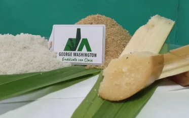

Nuestra cartera de proyectos garantizando el desarrollo sostenible de la organización y del entorno
- Secador de arroz:
- Proyecto desarrollado con la participación de la UCLV, que introduce innovación tecnológica en la operación unitaria del secado de solidos con la utilización de secador rotatorio. Encaminado a el encadenamiento productivo con productores independientes del territorio en el sostenimiento de la ley de soberanía alimentaria.
- Planta de pienso líquido:
- Proyecto conjunto con el centro de investigaciones porcinas, el instituto de ciencia animal y el grupo de expertos de nuestra organización con introducción de innovación tecnológica de producto en plena integración con todos los sistemas productivos del territorio para reutilizar, convertir y valorizar todos los residuales industriales y agropecuarios.
- Casita infantil:
- Proyecto social comunitario desarrollado en conjunto con el Ministerio de Salud Pública y el Ministerio de Educación para el incremento del bienestar de madres de nuestra organización y de la comunidad en la que nos encontramos.
- Proyecto Imagen:
- Proyecto social comunitario desarrollado con la Asociación Nacional de Comunicadores de Cuba dirigido a garantizar de manera armónica y responsable la presencia de nuestra sede en la comunidad.
- Rescate de la identidad y el patrimonio histórico azucarero:
- Proyecto desarrollado con la UCLV dirigido a reforzar los valores culturales intangibles en nuestra cultura organizacional y los pobladores de la comunidad.
- La ruta de la caña de azúcar y el ron en Cuba:
- Proyecto desarrollado de conjunto con el Ministerio del Turismo y la Corporación Cuba RonSA en el que se resaltan los valores culturales de los inicios de la producción ronera en Cuba partiendo de la caña de azúcar y las tradiciones de la época esclavista.
- Planta tecnológica para la producción de bioestimulantes:
- Proyecto de transferencia tecnológica vinculado al Instituto Cubano de la Caña de Azúcar en el que se generan micro organismos eficientes que permiten una mayor resiliencia de los cultivos ante el cambio climático y condiciones adversas de su desarrollo.
- Planta tecnológica para la producción de siropes saborizados:
- El proyecto consiste en una innovación tecnológica que toma como punto de partida el diseño de un nuevo producto, azúcar liquida (sirope refinado) avalado por el IIIA y enriquecido con saborizantes artificiales.
- Reconversión tecnológica parala producción de meladura:
- Proyecto de escalado industrial con la colaboración de la UCLV y el Instituto de Proyectos de la Industria Azucarera para transferir sistemas tecnológicos del central azucarero José Martí hacia nuestra fábrica de azúcar y permitirle a esta la extracción del jugo de caña y su conversión a meladura.
- Transferencia de tecnologías para la producción de controles biológicos asociados a las producciones agropecuarias:
- El proyecto consiste en el montaje de la quinta línea de producción de Eucelatoria que es un parasitoide polífago que comúnmente parasita las larvas de muchos lepidópteros logrando de esta manera un control efectivo sobre estos, con aplicación a amplia gama de cultivos.
- Introducción de estrategia de economía circular asociada a la producción de peces:
-
Proyecto consistente en la recuperación de 5 ha de lagunas de
oxidación para la producción de peces los que se fertilizan y
alimentan con la utilización de residuales de cosechas, losas
sanitarias, mieles finales de la producción de azúcar y que
luego de su comercialización en canal sus residuales son
aprovechados en la alimentación porcina como fuente de
proteínas.